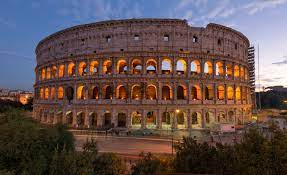
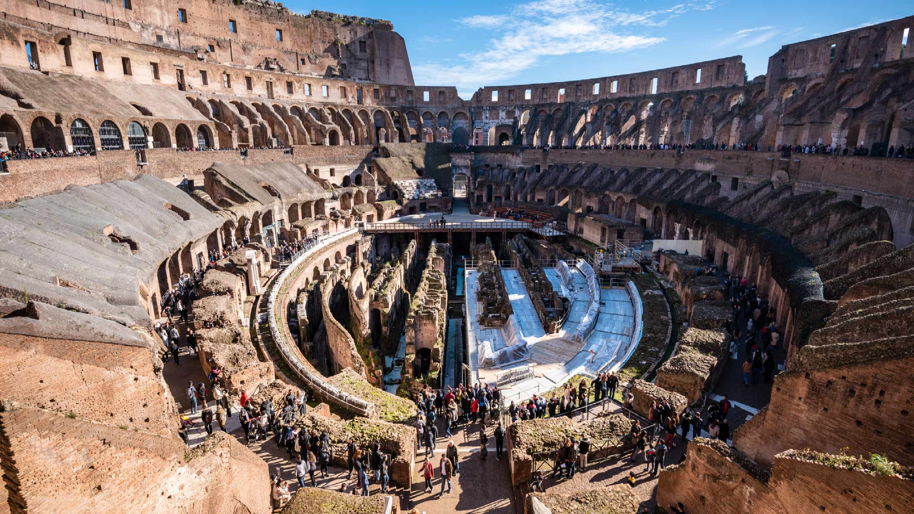
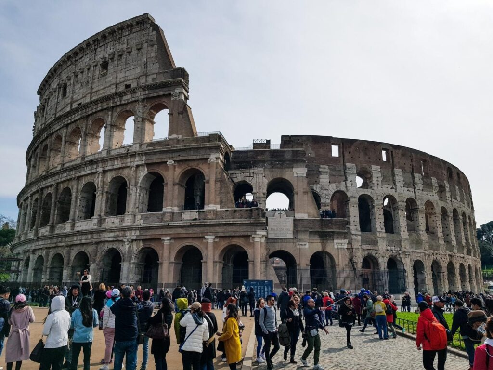
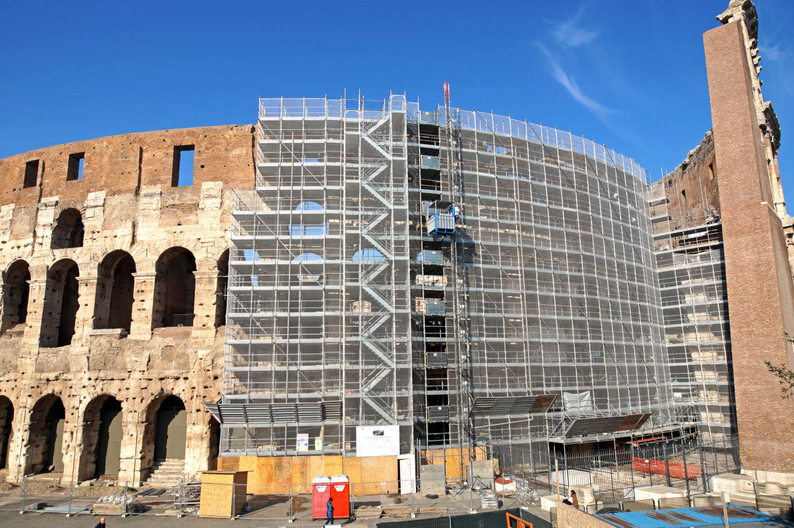
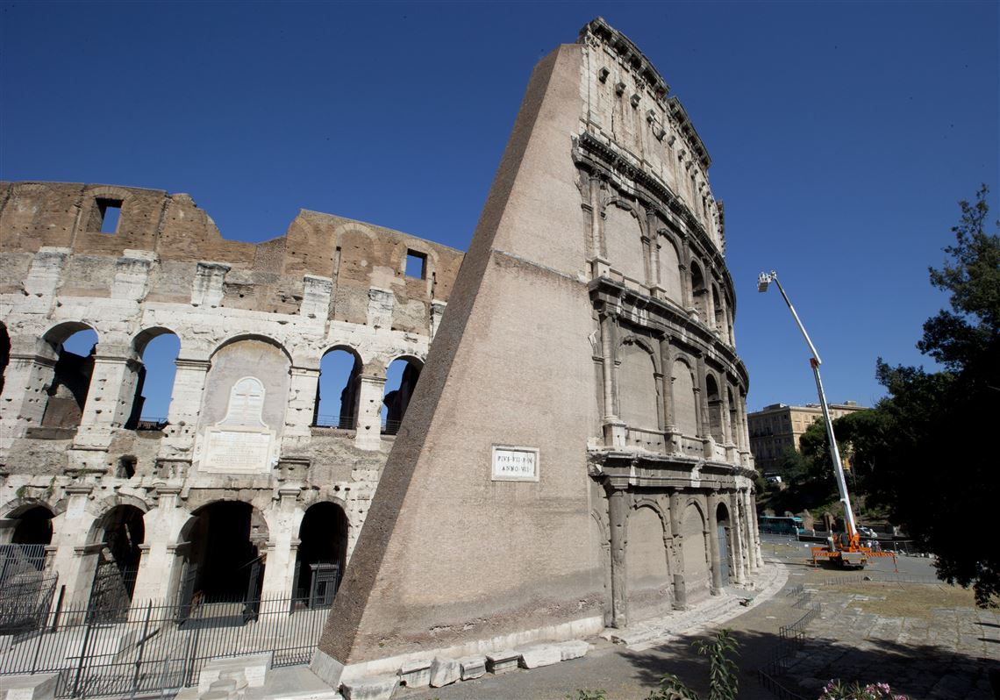

Colosseume in Roma
History

The Roman Colosseum has a long and rich history. From the times when it was used as a gladiatorial arena and witnessed staged hunts with thousands of wild beasts to today, it has seen the Roman Empire rise to its greatest splendor… and dwindle and disappear. It is said that up to 400,000 people met their end on the sands of the arena, as did one million wild animals of many different species.
- 72 AD – Construction of the Flavian Amphitheater begins under Emperor Vespasian. Vespasian viewed the Colosseum as a gift to the people of Rome — who were unhappy after the disastrous reign of Emperor Nero.
- 217 – A fire damages the building, destroying its wooden upper level completely.
- Late 6th century – The Colosseum is no longer used as an amphitheater to entertain the citizenry of Rome. Around this time a chapel is affixed to the building, the arena floor is used as a cemetery, and the vaulted spaces that make up the building’s walls under its seats are used as houses and workshops.
- 12th century – The Frangipani family, a powerful Roman patrician clan of the time, took over the building and converted it into a fortified castle.
- 14th to 18th century – The Colosseum undergoes progressive degradation as its building materials are stripped to be used elsewhere in Rome. The iron clamps that held the stones together are taken to be melted and reused, and the stone of its structure is scavenged and used to build other buildings throughout the city. Some of the marble that decorated its façade was used in the construction of Saint Peter’s Basilica.
- 19th and 20th centuries – The Colosseum undergoes successive restoration projects at the instance of various Popes, governments, and the city of Rome.
- 2013 to 2016 – The Colosseum undergoes a major restoration project. The entire façade of the building is cleaned, removing grime and soot accumulated from decades of Roman traffic.
- Today – The Colosseum receives over 4 million visitors a year. It is the most visited tourist attraction in Italy and one of the most popular and iconic buildings in the world. From the date of its completion in 80 AD, when it was still known as the Flavian Amphitheater, it is one thousand nine hundred and thirty-seven years old, making it one of the oldest and best preserved human-made structures in the world.
Description
- Exterior – the Colosseum is an entirely free-standing structure. It derives its basic exterior and interior architecture from that of two theatres back to back. It is elliptical in plan and is 189 meters long, and 156 meters wide, with a base area of 24,000 square metres . The height of the outer wall is 48 meters . The perimeter originally measured 545 meters . The central arena is an oval 87 m long and 55 m wide, surrounded by a wall 5 m high, above which rose tiers of seating. The outer wall is estimated to have required over 100,000 cubic metres of travertine stone which were set without mortar; they were held together by 300 tons of iron clamps. However, it has suffered extensive damage over the centuries, with large segments having collapsed following earthquakes. The north side of the perimeter wall is still standing; the distinctive triangular brick wedges at each end are modern additions, having been constructed in the early 19th century to shore up the wall. The remainder of the present-day exterior of the Colosseum is in fact the original interior wall.
- Interior seating  – According to the Codex-Calendar of 354, the Colosseum could accommodate 87,000 people, although modern estimates put the figure at around 50,000. They were seated in a tiered arrangement that reflected the rigidly stratified nature of Roman society. Special boxes were provided at the north and south ends respectively for the Emperor and the Vestal Virgins, providing the best views of the arena. Flanking them at the same level was a broad platform or podium for the senatorial class, who were allowed to bring their own chairs. The names of some 5th century senators can still be seen carved into the stonework, presumably reserving areas for their use.
- Arena and hypogeum – The arena itself was 83 meters by 48 meters . It comprised a wooden floor covered by sand (the Latin word for sand is harena or arena), covering an elaborate underground structure called the hypogeum (literally meaning "underground"). The hypogeum was not part of the original construction but was ordered to be built by Emperor Domitian. Little now remains of the original arena floor, but the hypogeum is still clearly visible. It consisted of a two-level subterranean network of tunnels and cages beneath the arena where gladiators and animals were held before contests began. Eighty vertical shafts provided instant access to the arena for caged animals and scenery pieces concealed underneath; larger hinged platforms, called hegmata, provided access for elephants and the like. It was restructured on numerous occasions; at least twelve different phases of construction can be seen.
Popularity
Colosseum most popular tourist attraction in world says TripAdvisor.
Rome's Colosseum has attracted 7.4 million visitors in 2018, an increase of 5.7 per cent compared to last year, according to the director of the Colosseum archaeological park, Alfonsina Russo. Russo announced the news on 18 December during the presentation of the new logo and interactive website of the Colosseum archaeological park.She said that "accessibility is a priority" for the park which, in addition to the Colosseum, includes the Roman Forum, the Palatine Hill and the Domus Aurea. The news comes as the Colosseum becomes the world's most popular tourist attraction in 2018.Italy scored highly on the top ten list, with the Vatican Museums ranked in second place and Venice’s Grand Canal in tenth position.
Restoration
  Rome's famed Colosseum reopened today, after an expansive restoration project that has brought new parts of the 2,000-year-old structure to light for the first time. This is the second phase of a wider $30 million restoration project that started in 2013 and is funded by Italian fashion house Tod's Group. The building was inaugurated a second time in 222 by the Emperor Severus Alexander, but it is not as far as it was finished since the repairs continued until 240. Italy Will Rebuild the Colosseum's Floor, Restoring Arena to Its Gladiator-Era Glory. In ancient Rome, tens of thousands gathered at the Colosseum to watch enslaved men, condemned criminals and wild animals fight to the death.